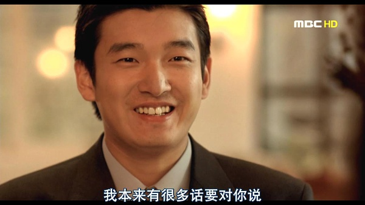
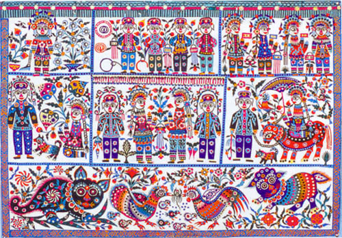

乒乓球, 羽毛球, 桌球, 象棋, 心理学。
一个人爬山,掉进峡谷 没有办法把手自己的手腕割掉，电影《127小时》。
本片讲诉的是远足者阿伦·罗斯顿在犹他州的一次远足中，因为在一个偏僻的峡谷被掉落的山石压住胳膊而无法动弹，孤独的被困在那里。在接下来的五天里，罗斯顿精神上经受着巨大的考验，同时也审视着自己的人生，更重要的是，他需要利用手上的各种条件想法脱离险境。终于，他痛下决心，以惊人的勇气给自己的胳膊做了截肢手术，并攀下65英尺的谷底，同时忍痛步行8公里后，最后获得营救，成功生还。
有一天，柏拉图问老师苏格拉底什么是爱情？老师就让他先到到麦田里去，摘一棵全麦田里最大最金黄的麦穗来，期间只能摘一次，并且只可向前走，不能回头。柏拉图于是按照老师说的去做了。结果他两手空空的走出了田地。老师问他为什么摘不到？他说：因为只能摘一次，又不能走回头路，期间即使见到最大最金黄的，因为不知前面是否有更好的，所以没有摘；走到前面时，又发觉总不及之前见到的好，原来最大最金黄的麦穗早已错过了；于是我什么也没摘。老师说：这就是“爱情”。
之后又有一天，柏拉图问他的老师什么是婚姻，他的老师就叫他先到树林里，砍下一棵全树林最大最茂盛、最适合放在家作圣诞树的树。其间同样只能砍一次，以及同样只可以向前走，不能回头。柏拉图于是照着老师的说话做。今次，他带了一棵普普通通，不是很茂盛，亦不算太差的树回来。老师问他，怎么带这棵普普通通的树回来，他说：“有了上一次经验，当我走到大半路程还两手空空时，看到这棵树也不太差，便砍下来，免得错过了后，最后又什么也带不出来。”老师说：这就是“婚姻”。
柏拉图又有一天又问老师苏格拉底什么是外遇。苏格拉底还是叫他到树林走一次，可以来回走，在途中要取一支最好看的花。柏拉图又充满信心地出去。两个小时之后，他精神抖擞地带回了一支颜色艳丽但稍稍焉掉的花，苏格拉底问他：“这就是最好的花吗？” 柏拉图回答老师：“我找了两小时，发觉这是最盛开最美丽的花，但我采下带回来的路上，它就逐渐枯萎下来”这时，苏格拉底告诉他：“那就是外遇” 。
又有一天又问老师苏格拉底什么是生活。 苏格拉底还是叫他到树林走一次，可以来回走，在途中要取一支最好看的花。 柏拉图有了以前的教训，又充满信心地出去。过了三天三夜，他也没有回来。 苏格拉底只好走进树林里去找他，最后发现柏拉图已在树林里安营扎寨。 苏格拉底问他：“你找着最好看的花么？” 柏拉图指着边上的一朵花说：“这就是最好看的花吗？” 苏格拉底问：“为什么不把它带出去呢？” 柏拉图回答老师：“我如果把它摘下来，它马上就枯萎。即使我不摘它，它也迟早会枯。所以我就在它还盛开的时候，住在它边上。等它凋谢的时候，再找下一朵。这已经是我找着的第二朵最好看的花”。
高二和化学老师争执。
总是喜欢说大实话（来自鹏哥）。
考C++的时候，拍了揣姨的肩膀。

古象、犀牛化石馆陈列有1975年出土于旬邑县马栏镇西塬村的黄河剑齿象化石和犀牛化石骨架， 其中古象化石体长8.45米，高4.3米，犀牛化石体长4.8米，高3.1米， 距今已有三百多万年的历史，是研究黄河中游黄土高原古地质、古气候，古地貌、古生物的重要标本。 大象化石体魄之大，象牙之巨都堪称世界之最，被誉为“世界第一象”； 犀牛化石是目前世界上复原装架的第一具完整的板齿犀牛化石骨架。 古象、犀牛化石为国家一级文物。
 库淑兰（1920-2004），陕西旬邑县人，自称“剪花娘子”； 中国剪纸艺人，获得多个荣誉；是中国首位被联合国教科文组织授予“中国民间工艺美术大师”称号的人。 2004年12月19日，因肺结核、气管炎等病情突然加重，经抢救无效，库淑兰在家中病逝，享年84岁。
陕西省石门山森林公园于1994年经陕西省林业厅批准建立，位于咸阳市以北140公里的旬邑县境内，距县城30公里。 公园地处子午岭南端，属低山丘陵型地貌，面积165平方公里，园内气候湿润，层峦叠嶂，林草丰茂，兽走禽飞，风光旖旎， 300多种植物，120多种中草药和50多种的珍禽异兽使得公园成为黄土高原上名副其实的“动植物王国”。
山清水秀，人杰地灵的石门山森林公园被誉为渭北高原上的绿色明珠，西安咸阳的后花园。 园内秀丽的自然风光和源远流长的人文景观交相辉映，姜女原圣母庙、扶苏庙、秦直道上的雄关天险和秦兵站等遗址更能勾起人无限遐思。 石门山森林公园景色秀丽，设施齐全，是旅游观光、消夏避暑的好去处。
我不去想，
是否能够成功 ，
既然选择了远方 ，
便只顾风雨兼程。
我不去想，
能否赢得爱情 ，
既然钟情于玫瑰 ，
就勇敢地吐露真诚 。
我不去想，
身后会不会袭来寒风冷雨 ，
既然目标是地平线，
留给世界的只能是背影 。
我不去想，
未来是平坦还是泥泞 ，
只要热爱生命 ，
一切，都在意料之中。